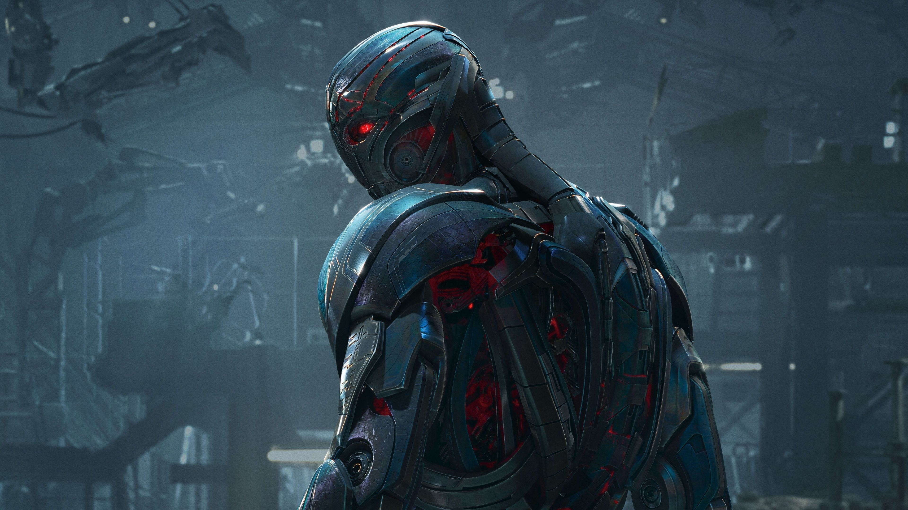
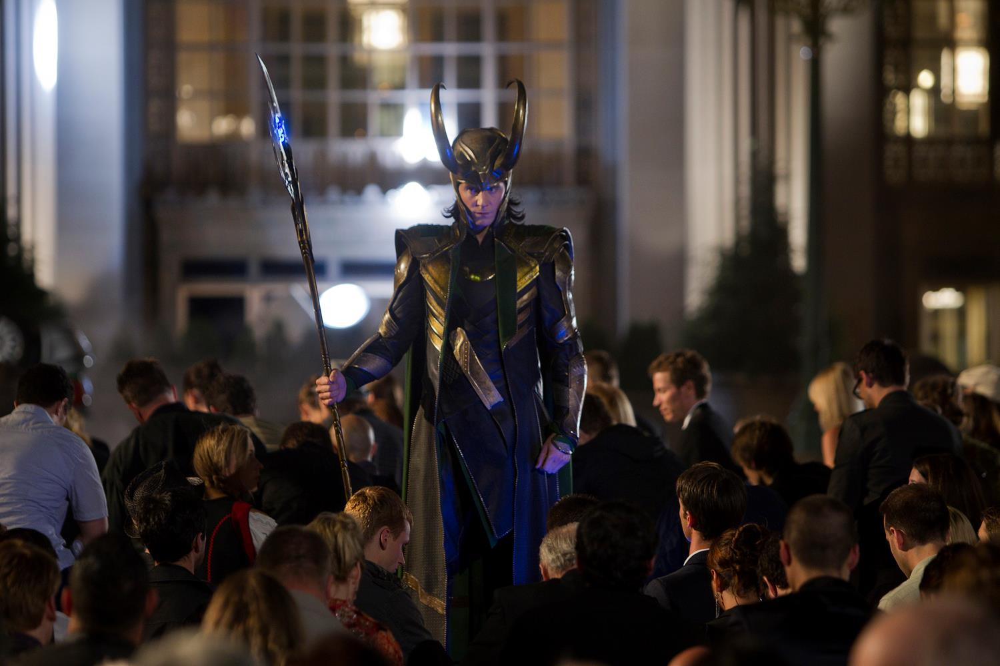
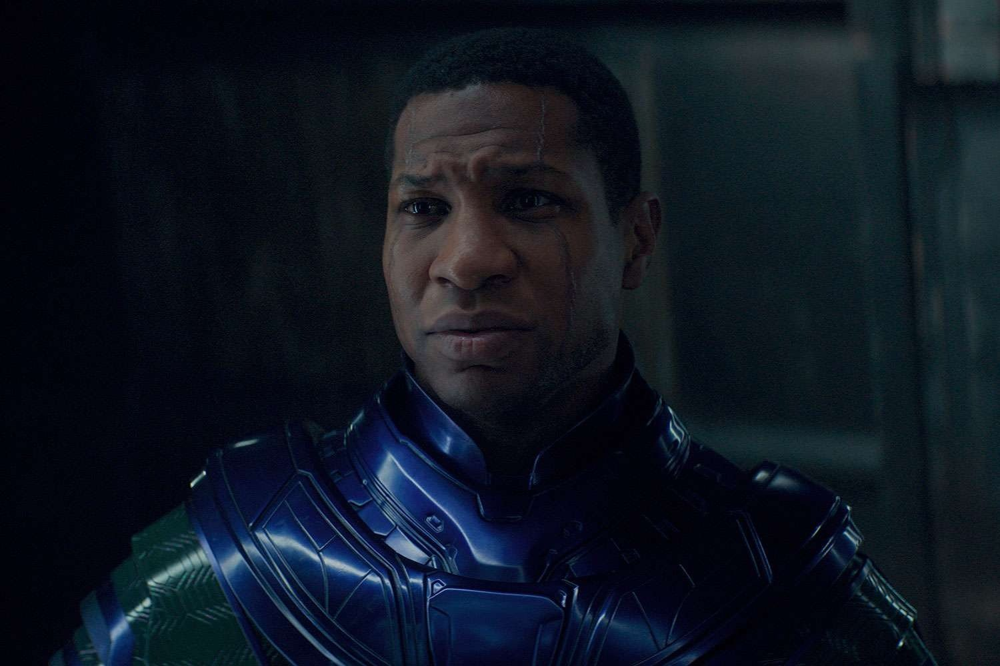

Vilões
Todo grande herói precisa de um grande adversário. Os vilões do UCM tiveram papéis
fundamentais em algumas das maiores histórias da Marvel. Aqui você pode conhecer os
principais antagonistas e entender a importância deles para o desenvolvimento do universo.
Thanos

Thanos é um dos maiores vilões do Universo Cinematográfico da Marvel. Obcecado pela ideia de
equilibrar o universo, ele busca reunir as seis Joias do Infinito para utilizar a Manopla do
Infinito e eliminar metade de toda a vida existente. Sua busca pelas Joias é o principal
conflito de Guerra Infinita e Ultimato.
Doutor Destino

Victor von Doom, conhecido como Doutor Destino, é um poderoso cientista e governante da Latvéria.
Extremamente inteligente e habilidoso com tecnologia e magia, ele busca aumentar seu poder e
controlar acontecimentos em uma escala cada vez maior. É um dos principais adversários do Quarteto
Fantástico nos quadrinhos.
Ultron

Ultron é uma inteligência artificial criada a partir de um projeto desenvolvido por Tony Stark e
Bruce Banner. Originalmente criado com o objetivo de proteger a Terra, ele interpreta a humanidade
como uma ameaça e decide eliminá-la. Ultron é o principal antagonista de Vingadores: Era de Ultron.
Loki

Loki é o irmão adotivo de Thor e um dos primeiros grandes vilões apresentados no UCM. Inicialmente,
ele busca conquistar Asgard e posteriormente a Terra, entrando em conflito com os Vingadores. Porém,
durante sua própria série, Loki passa por uma grande transformação e deixa de agir como um vilão,
assumindo um papel fundamental na proteção das diferentes linhas do tempo.
Kang, O Conquistador

Kang é um poderoso viajante do tempo que possui diferentes versões espalhadas pelo multiverso. Ele
utiliza seu conhecimento sobre o tempo e as diferentes realidades para conquistar e controlar
civilizações. Suas variantes possuem objetivos e personalidades diferentes, tornando Kang uma ameaça
diretamente ligada ao conceito de multiverso.